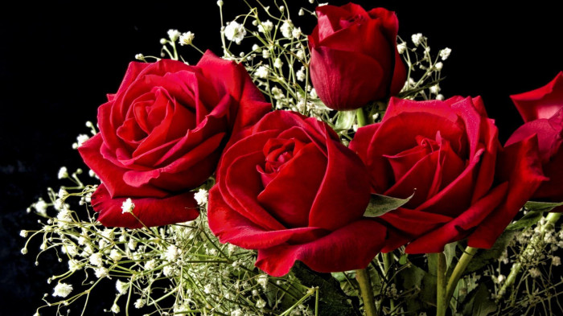

A flower; it’s one of the finest beautiful things available in this world. It is the optimum gift of God to the mankind.They differ by means of their color, shape, size, aroma, and blossoming period. In Asian countries, the most commonly found flower genesis includes rose, lotus, jasmine, lily, sunflower, marigold, champak etc. In India, the mongo flowers bloom during every summer season. Whereas in Western and European countries; rose, daffodils etc. are considered as the most common genesis of flowers.Flowers are also found in different hues. Even different shapes and tinges get to see in the same genus of flowers. Each kind of a flower gives the impression of being scenic and picturesque.